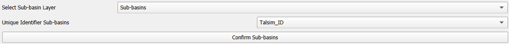
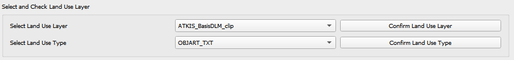
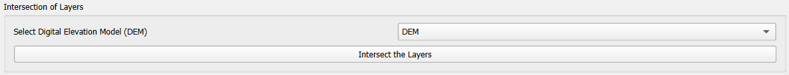

Step by Step¶
Select Sub-basin Layer¶
First, select the layer containing the sub-basins from the drop-down-menu that lists all polygon layers in your current QGIS project. Confirm your selection by clicking on the ‘Confirm Sub-basins’-Button. Upon clicking this button the Sub-basin layer is selected, and overlapping features and duplicates are removed. You can inspect the result in your QGIS project (layer ‘Sub-basins’).
After selecting the sub-basin layer’s fields containing 1) the unique identifier and 2) the slope values must be selected from the drop-down menu. These fields are utilized in the final EFL-layer and serve as input parameters to Talsim.

Select & Edit Soil Layer¶
Select Soil Layer
Choose the soil layer from the drop-down menu and confirm your selection by clicking ‘Confirm Soil’. Upon doing so, all valid geometries of this layer are selected and clipped to match the boundaries of the Sub-basin layer. During this step duplicate geometries are removed from the layer and the soil mapping table is populated with the fields of the soil layer.
Soil Mapping
This table contains Talsim soil parameters in the first column and all the field names of the soil layer in drop-down menus in the second column. In this step, users are required to map each Talsim parameter to its corresponding field in the soil layer. The table below shows the necessary type for these parameters. If the user-mapped field has a different datatype, the plugin, where possible, converts the field’s values to the parameter’s type. If ‘Parameter not available’ is selected, that parameter will be added with null values.
To finalize the soil mapping, click ‘Confirm Soil Mapping’. This creates a new layer, containing all fields from the soil layer and all parameters from the soil mapping table, assigned with values from their corresponding fields. If there is a datatype mismatch between the soil layer’s field and the parameter, a warning is logged.
Parameter
Type
ID_Soil
int
NameSoil
string
Description
string
BulkDensityClass
int
Category
int
WiltingPoint
float
FieldCapacity
float
TotalPoreVolume
float
KfValue
float
MaxInfiltration
float
MaxCapillarySuction
float
LayerThickness1
float
Optional Soil Editing Steps
Before finalizing the soil layer, users have the option to perform some editing steps. Please refer to section Optional Editing Steps below for a detailed explanation of ‘Check for Overlapping Features’, ‘Delete Overlapping Features’, ‘Check for Gaps’ and ‘Fill Gaps’.
In addition to the option of deleting all overlapping parts (using button ‘Delete Overlapping Features’), you can also selectively remove specific overlapping soil features. This can be done via the table that populates when you click ‘Check for Overlapping Features’. This table displays all overlapping soil features across two columns. For each pair of overlapping features, you can decide, which feature’s geometry should stay unchanged, and which should have its overlapping part removed from its geometry. In the third column, you can select features to highlight them in the soil layer, allowing for easy viewing. After you have identified all the unwanted overlapping parts, simply press ‘Delete overlapping part of selected Features’ to remove the overlapping parts from the selected features.
Create Soil Layer
This step dissolves the layer according to the Talsim parameters, removes the fields that are not required for Talsim and creates the soil layer used for the intersection.


Select and Edit Land use layer¶
Select Land use Layer
First, select the land use layer from the drop-down menu and confirm your selection by clicking ‘Confirm Layer’. Upon doing so, all valid geometries of this layer are selected and clipped to align with the boundaries of the sub-basin layer. During this process, any duplicate geometries within the layer are also removed. After confirming the layer, you must then select the field containing the land use types and confirm this selection by clicking ‘Confirm Field’. The unique land use types identified here will be used in a subsequent step.

Upload Talsim Land use Names and Parameters
The user must upload a CSV-file that includes the Talsim land use types and their associated parameter values. This can be done by by clicking ‘Select CSV-File’, which allows the user to choose the CSV-file. It is important to select the correct delimiter for the file. After uploading, users can check the parameters by reviewing the QTalsim-Log.

Land use Mapping
When you click on ‘Start Landuse Mapping’, the land use mapping table will be populated with all unique land use types from the layer in the first column. In the second column, a dropdown-menu with all Talsim fields of the CSV-file will appear. Here, you must match each land use type from your data (in the first column) with the corresponding Talsim land use type (in the second column). For convenience, the second column is automatically prefilled with Talsim land use types that have the same name in the layer and the CSV-file. After completing the mapping, click ‘Confirm Landuse Mapping’ to create a new layer containing the input fields from your layer and the Talsim parameter values, as specified in the CSV-file.
Optional Editing Steps for Land use Layer
After confirming the land use mapping you have the option to perform additional editing steps, such as deleting overlapping features and filling gaps. For more detailed information on these steps, please refer to section Optional Editing Steps.
In addition to the option of deleting all overlapping parts (using button ‘Delete Overlapping Features’), you can also selectively remove specific overlapping landuse features. This can be done via the table that populates when you click ‘Check for Overlapping Features’. This table displays all overlapping landuse features across two columns. For each pair of overlapping features, you can decide, which feature’s geometry should stay unchanged, and which should have its overlapping part removed from its geometry. In the third column, you can select features to highlight them in the landuse layer, allowing for easy viewing. After you have identified all the unwanted overlapping parts, simply press ‘Delete overlapping part of selected Features’ to remove the overlapping parts from the selected features.
Create Land use Layer
Clicking ‘Create Land Use Layer’ dissolves the layer according to the Talsim parameters, removes any fields that are not required for Talsim and generates the land use layer that will be used for intersection.


Intersection of Layers¶
This step results in the creation of the files: BOD, BOA, LNZ and EFL, which can be used as input files for Talsim. To generate the HRUs, the three layers (sub-basins, soil and land use) are intersected in a first step. The user can set a minimum size of the HRUs [m²] and a minimum percentage of HRUs relative to the sub-basin’s area. HRUs that fall below the specified size or percentage share are deleted and filled using the ‘Eliminate’-tool. You can select the elimination-mode from the drop-down menu (find further information here).
Gaps within the sub-basin layer are left unfilled, while all other gaps are appropriately filled. Any overlapping features within the resulted intersected layer are removed.

The resulting layers are then automatically added to the current QGIS project.
Save Layers as ASCII-Files & Geopackage¶
In the final step, users have the option to export layers as ASCII files. Exporting ASCII files allows for the layers to be saved in a format compatible with Talsim NG4. To begin, users must select the ‘Select Output Folder’ option and choose an appropriate folder. This folder will be designated for both the ASCII files and the geopackage export. Once the folder is chosen, users can proceed by clicking ‘Export ASCII Files’ and entering a preferred name for the ASCII files. These files will then be exported with the corresponding extensions (.EFL, .BOD, .BOA, .LNZ). By clicking ‘Ok’, the layers are stored in a geopackage under a name specified by the user.
Optional Editing Steps¶
For both the soil layer and the land use layer, the user has the option to perform additional editing steps.
Check for Overlapping Features
This function checks for overlapping features within the layer. It identifies features that are either partially or completely overlapping. The feature-IDs of the overlapping features are logged to the QTalsim-Log. Additionally, a layer named ‘Layer with overlapping features’ is added to the QGIS project. You can then inspect the overlapping features by reviewing this layer’s attribute table by searching for the overlapping feature IDs.
Delete Overlapping Features
This function removes all overlapping parts of a layer. If two polygons overlap, the overlapping part is assigned to the smaller of the two polygons.
Check for Gaps
This function checks for gaps in the soil/land use layer. It identifies not only gaps within the layer itself but also gaps that occur along the boundary of the sub-basin layer. A separate layer, which includes all detected gaps from the soil or land use layer, is then added to the QGIS project. This allows the user to inspect and analyze these gaps more closely.
Fill Gaps
This function fills all detected gaps in the layer using the Eliminate-tool. You can specify the elimination-mode from a drop-down menu (find further information here). The result of this step is a layer free of gaps and matching the extent of the sub-basin layer.